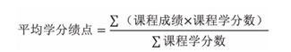

序言
本人是机械与汽车工程学院20级车辆工程二班的一名本科生。现在时间是2023年11月11日，外面滴答下着雨，我的手指在键盘上跳跃，回忆我的大学四年。
这本册子的名字叫做《华工推免手册》，其实按照我的最初设想，我本来想写一本《华工生存指南》。只是当我开始构思结构时才发现自己是多么自大，我竟然觉得自己在华工待了三年多，在五山仅待了二年多，就能写出一本描摹华工大学生学习生活面貌的全面指南。我在屏幕前踌躇了许久却无法落下一个字，不知从何说起也不知如何布置。最终我选择了一个小的切入点。一来发展问题是每个大学生都需要面临的抉择，而保研在现在（2023年）大概是大多数人心中比较理想的方向，但是保研有一系列流程却没有人给你专门去讲解，免不了踩一些坑，所以选择这个主题来写可能给大部分同学提供便利；二来我本人在大学生活前三年，关于推免的准备也占据了大部分时间，也算是小有了解，我应该还算能在这件事上讲两句的。
关于写这本小册子的原因主要有以下几点。
首先我不得不承认，我在保研这条路上是花费了很多心血的，沉浮起落，沉默怒吼，那都是我大学生活的写照，我谨以此文纪念我的大学生活。
其次，在本学期开始走推免的程序的时候我身边有一部分同学因为流程不熟悉，竟然努力三年而失去了保研的资格，我感到无比惋惜，我希望我们这一代人踩过的坑后人不要再重蹈覆辙。
最后，身为一名党员，我认为应该做一些力所能及有利于社会和他人的事，我经常在包打听上看到有人提问专业、学分之类的问题，却没有人能解答，我希望能写这样一本册子把推免这件事讲清楚，让大家少一些担忧与惶恐。同时我也能在毕业之际为我的母校留下些什么。
序言结尾我祝愿所有的华工学子都能在华工发现你自己，能在大学本科四年找到自己的海洋与海岸。希望有志保研的同学在每年的九月十月能够“秋风得意马蹄疾，一日观尽木棉花。”
一、 这本书讲什么
这本册子的主要内容可能会让某些兴致冲冲翻开本书的人失望了，这不是一本什么《降龙十八掌》一样的绝世武功，能让你修炼以后功力大涨。我不会在书中给大家做详细的保研攻略，我只是梳理保研的大致流程，告诉你在什么阶段应该做什么事，以及一些注意的事项。我不会保证你读了这本册子以后一定能保研，我只能说如果你想要保研，那么多半绕不开我在文中提到的内容。我文章的大致结构可以见目录，对于一年级的同学来说我建议从头阅读本文（预计不会花太多时间），而对于高年级尤其是三升四的同学，可以直接从目录中查找自己所处的阶段然后对点阅读。
另外这里提出一点观念，很多人把保研比作一场战争，而周围的同学都是你的对手，我认为这样的思维是错误的。至少在华工是这样的，因为我们有足够多的推免名额（至少高于大部分211），根据我的体验和观察，只要稍微努力一点就可以拿到名额，而且根据我的预测，以后推免名额只会越来越多，所以我们不必为了这件事而舍弃了大学结交志同道合的朋友以及了解其他有趣的事的可能性。我们大可以摒弃成见，携手前行。为什么要携手前行呢？因为我希望大家在这件事上能够多交流，有时也许因为你多提出的一个问题就可以少踩很多坑，大家互通有无，将竞争关系转化为合作关系，这才是有智慧的人应该做的事。当然我也并不鼓励大家刨根问底式的提问，提问是你的自由，而回答与否是别人的权利，我们应该尊重他人的权利与隐私。
二、 2023年九月机汽学院推免细则
内容如下：
各有关单位：
根据《华南理工大学推荐优秀应届本科毕业生免试攻读研究生管理办法（2021年修订）》以及教育部有关文件精神，为积极稳妥做好我校2024年推免工作，现对有关事项通知如下：
一、基本原则
1 . 坚持立德树人、以德为先。推免工作应坚持德智体美劳全面衡量，以德为先，把学生思想品德考核作为推免生遴选的重要内容和录取的重要依据。注重对学生政治态度、思想表现、道德品质、科学精神、诚实守信、遵纪守法等方面的考察，思想品德考核不合格者不予推荐录取。
2 . 坚持科学遴选、全面考核。突出考查学生的学业表现，建立科学严谨的推免评价体系，引导学生全面发展，不断提高人才选拔质量。
3 . 坚持公开透明、严格管理。进一步规范和完善推免工作，加强组织领导，健全规章制度，确保推免工作的公开、公平、公正。
二、组织领导
学校成立推免生遴选工作领导小组，由学校主管人才培养工作的副校长担任组长，成员由教务处、研究生院、学生工作部（处）、校团委等部门负责人组成。学校推免生遴选工作领导小组负责制定学校推免生工作方案、审核院（系）材料、公示并确定最终名单。教务处负责具体实施和全程监督，纪委办公室负责开展再监督。
各院（系）成立推免生遴选工作小组和监督小组，工作小组由院（系）党委（党总支）书记、院长（系主任）担任组长，分管本科教学副院长（副系主任）担任副组长；监督小组由院（系）纪委书记担任组长。成员主要由专业负责人、班主任、教务员、辅导员等组成，负责本院（系）推免工作的动员、咨询、审核、公示、报送、监督等事宜。
三、基本推荐条件
1 ．应届本科毕业生。
2 ．具有良好的政治态度、思想表现及道德品质，有求真务实、开拓创新的科学精神，遵纪守法，诚实守信。
3 ．学风端正，无任何未解除的违法违纪处分。
4 ．学习成绩优秀，前三学年（五年制前四学年）本科综合培养计划规定的必修课原始成绩百分制平均学分绩点在本专业（方向）排名前50%。如同一专业不同方向的前三学年（五年制前四学年）必修课程一致，按专业排名；如同一专业不同方向的前三学年（五年制前四学年）必修课程不一致，按方向排名。
5 ．身心健康，有足够的精力完成研究生学业，第三学年（五年制第四学年）体质测试成绩达到70分及以上。
6 ．全国大学英语四级考试成绩达到500分及以上或全国大学英语六级成绩达到425分及以上，或托福网考（家庭版除外）成绩达到90分及以上，或雅思成绩达到6.0及以上。
体育类（不含高水平运动队、优秀运动员班）、艺术类专业学生要求全国大学英语四级考试成绩达到425分及以上，或托福网考（家庭版除外）成绩达到80分及以上，或雅思成绩达到5.5及以上。
英语专业学生须通过英语专业四级考试；日语专业学生须通过日语N1测试，且全国大学英语四级考试成绩达到500分及以上或全国大学英语六级考试成绩达到425分及以上。
四、推免类型
推免生分为普通类推免生和其他类推免生。
1 . 普通类推免生
普通类推免生须同时满足基本推荐条件1—6。
2 . 其他类推免生
（1）“2+3”学生辅导员，即获得推免资格后保留入学资格两年，先从事两年学生思想教育与管理工作后入读研究生。
同时满足基本推荐条件1—5、英语水平要求全国大学英语四级考试成绩达到425分及以上，或托福网考（家庭版除外）成绩达到80分及以上，或雅思成绩达到5.5及以上，且要求政治面貌为中共党员（含预备党员）。
（2）“1+3”西部计划和研究生支教团，即获得推免资格后保留入学资格一年，先赴西部地区服务一年后入读研究生。
同时满足基本推荐条件1—5、英语水平要求全国大学英语四级考试成绩达到425分及以上，或托福网考成绩（家庭版除外）达到80分及以上，或雅思成绩达到5.5及以上，符合西部计划（研究生支教团）体检要求。
（3）“2+3”征兵计划，即获得推免资格后保留入学资格两年，先在部队入伍服役，退役后入读研究生。
同时满足基本推荐条件1—5、英语水平要求全国大学英语四级考试成绩达到425分及以上，或托福网考（家庭版除外）成绩达到80分及以上，或雅思成绩达到5.5及以上；身体条件达到《应征公民体检标准》的要求；政治考核符合国家《征兵政治考核工作规定》的有关要求。
（4）教改班（卓越班、创新班、计算机联合班、华大基因班、工业设计实验班、工业工程“2+2”班等）推荐条件按相关管理办法执行。
（5）“强基计划”学生按相关管理办法进行学籍转段，无需参与推免。
五、推荐名额
学校按照教育部下达的推免名额，结合各院（系）当年应届本科毕业生人数，统筹考虑“双一流”建设学科、学科评估结果、本科教学研究与教学改革、教学管理规范、上一学年的推免工作等方面，确定各院（系）推免名额。
同时为了更好服务国家发展战略，推免名额增量优先支持国家重大科技创新平台建设、重大科研任务攻关以及“双一流”学科建设，重点向基础学科、应用技术学科领域以及新兴交叉学科领域倾斜。
各院（系）可按不超过推荐名额的20%确定各专业后备人选。
六、推免生遴选综合评价体系
根据教育部要求，将本科阶段学业综合成绩作为推免工作最基础的遴选指标，同时将学生参军入伍服兵役、到国际组织实习、科研成果、竞赛获奖等因素纳入学校推免生遴选综合评价体系。具体指标设置的要求如下：
推免综合评价分=必修课原始成绩百分制平均学分绩点×85%+社会服务×5%+科研潜质×10%
1 . 必修课原始成绩百分制平均学分绩点以推免管理系统数据为准。
2 . 社会服务由参军入伍服兵役和到国际组织实习两部分构成，最高不超过100分。其中，参军入伍服兵役赋分100；本科阶段圆满完成到主要的政府间国际组织和具有重要影响力的非政府间国际组织实习且实习地点为海外的国际组织总部及总部外机构办事处等的学生，经学院（系）推免工作小组审核同意后赋分50，如参加多个项目，只取其中一项。符合要求的国际组织名单参照国家留学基金委重点资助国际组织名单（查询网址：https://gj.ncss.cn/gjzzjs.html）。
3 . 科研潜质由学科竞赛和科研成果（含学术论文、发明专利和项目）两部分构成，最高不超过100分。学生在学科竞赛有多项赋分情况时，只取其中一项最高得分；学生在科研成果有多项赋分情况时，只取其中一项最高得分。在科研成果和竞赛获奖中，如有相同科研成果既发表论文，又参加竞赛得奖，只可取一项赋分。
（1）学科竞赛赋分。获得国际、国家级大学生学科竞赛和科技竞赛（具体列表见附件1）最高级别奖项的个人或团体的主力队员前两名（以获奖证书排名为准），按表1进行赋分。为保持政策衔接，中国国际“互联网+”大学生创新创业大赛全国赛、“挑战杯”全国大学生课外学术科技作品竞赛全国赛、“挑战杯”中国大学生创业计划竞赛全国赛赋分学生名单参照相应年度奖励管理办法执行。
非运动训练和非高水平运动队专业学生个人或作为集体项目的主力队员代表学校参加规定的正式体育竞赛获得相应成绩，按表1进行赋分；高水平运动队（含运动训练专业）学生个人或作为集体项目的主力队员代表国家或学校参加规定的正式体育竞赛获得相应成绩，可按表2进行赋分。表1 学科竞赛赋分表
- 竞赛类型 赋分
- 中国国际“互联网+”大学生创新创业大赛全国赛金奖、“挑战杯”全国大学生课外学术科技作品竞赛全国赛特等奖、“挑战杯”中国大学生创业计划竞赛全国赛金奖 100
- 其它国际级/国家级学科竞赛和科技竞赛的最高级别奖项 40
- 全国学生运动会冠军 40
- 全国大学生单项锦标赛冠军或广东省大学生运动会冠军 30
- 广东省大学生单项锦标赛或全国分区赛冠军 20
表2 高水平运动队（含运动训练专业）参加竞赛赋分表
- 竞赛类型 赋分
- 国际级比赛冠军 80
- 全国学生运动会冠军 40
- 全国大学生单项锦标赛冠军或广东省大学生运动会冠军 30
- 广东省大学生单项锦标赛或全国分区赛冠军 20
（2）科研成果赋分。科研成果包括学术论文、发明专利以及项目三部分，可按表3进行赋分。其中学术论文仅限学生本科阶段在本学科高水平期刊上以独立作者或第一作者发表的与学业相关的科研论文，有多篇论文者实行代表作评价，取其中一项最高得分；发明专利仅限学生在本科阶段以第一作者身份获正式授权的发明专利；项目仅限参加国家级大学生创新创业训练计划结题优秀的项目负责人。对于参与本校教师的重大科研项目且获得国家级奖励的学生，在同等条件下优先考虑。
表3 科研成果赋分表
- 成果类型 赋分
- 发表在《Science》、《Nature》及其子刊上的论文 100
- 在国内外SCI/EI（核心）/CSSCI/SSCI/A&HCI检索源期刊上发表论文（含被录用者）或者在国内外学术期刊上发表论文并被SCI/EI/CSSCI//SSCI/A&HCI（光盘版）收录的学术论文 40
- 以第一作者身份获正式授权发明专利 30
- 参加国家级大学生创新创业训练计划结题优秀的项目负责人 30
七、推荐工作程序
1 . 学生网上提交申请
学生登录华南理工大学推荐免试研究生管理系统网页http://www.scut.edu.cn/tuimian （账号为学号，密码为身份证后六位），如实填写相关个人信息并保存，核查无误再提交。同时将符合推免生遴选综合评价体系要求的社会服务、学科竞赛、科研成果等相关材料原件和复印件交院（系）。
报名“2+3”辅导员和“2+3”征兵计划的学生须按学生工作部（处）要求提交相应申请材料，具体以学生工作部（处）通知为准。报名参加研究生支教团和西部计划（“1+3”）的学生须填写《研究生支教团和西部计划（“1+3”）报名登记表》（相应表格在校团委网页下载）。
2 . 院（系）审核学生申请材料
（１）普通类推免生、各类教改班
院（系）成立专家审核小组（专家组成员应具有相关学科副教授以上职称，一般不少于5人），可会同本研究领域权威专家、相关期刊杂志或赛事主办单位等，对申请推免资格学生的社会服务、科研成果、竞赛获奖等相关内容进行审核鉴定，必要时可以组织公开答辩，答辩全程要录音录像，答辩结果要公开公示。对符合推免生遴选综合评价体系的材料明确审核鉴定意见并签字存档，排除抄袭、造假、冒名及有名无实等情况。未通过审核鉴定的，不得纳入推免遴选评价成绩计算体系。学生与直系亲属或学历、职称、职务明显高于本人者合作的科研成果、竞赛奖项等仅作为参考，不纳入学生本人推免遴选综合评价成绩计算体系，同等条件下可优先考虑。
创新班、卓越班按《关于做好2020级本-博（本-硕）连读创新班、卓越班本研衔接工作的通知》执行。
（2）其他类推免生
①申请“2+3”辅导员的学生，按学生工作部（处）通知要求（另行发布）提出申请，通过招聘院（系）考核和学生工作部（处）综合考察后予以公示；
②申请“1+3”西部计划和研究生支教团的学生，按校团委通知要求（另行发布）提出申请，通过校团委专项考核后予以公示，原则上每个院（系）获得推免“1+3”西部计划和研究生支教团的学生不超过 3人；
③申请“2+3”征兵计划的学生，按学生工作部（处）通知要求（另行发布）提出申请，通过学生工作部（处）专项考核后予以公示。
3 . 院（系）（相关部门）确定拟推荐名单
（1）普通类推免生、各类教改班
各院（系）根据专家审核小组鉴定结果开展遴选工作，确定推免综合评价结果，依据综合评价结果按专业由高到低排序（如同一专业不同方向的必修课程不一致，按方向排序），根据限额确定拟推荐名单和本院（系）后备名单。如有学生放弃推免资格，在院（系）公示期内，按本院（系）后备名单中学生所在专业排序（如同一专业不同方向的必修课程不一致，按方向排序）确定拟推荐名单；院（系）公示期结束后，放弃指标由学校统筹安排，按相关院（系）后备排序确定拟推荐名单。新增补的拟推荐名单，应按要求予以公示。
（2）其他类推免生
申请“2+3”辅导员、“1+3”西部计划和研究生支教团的学生、“2+3”征兵计划的学生通过相关部门组织的专项考核和综合考察，经公示无异议后，报学校推免工作领导小组审核，审核通过后方可获推免资格，不占用院（系）普通类推免名额。
4 . 院（系）公示拟推荐名单及相关赋分实物材料
各院（系）确定拟推荐名单和本院（系）后备名单等信息，按照附件3格式要求在网上进行公示，相关赋分实物材料（如社会服务、学科竞赛、科研成果等）在院（系）指定地点公示，接受各方质询，公示期为7天。公示结束后，各院（系）提交公示情况报告（附件4）。
5 . 学校审核确定推免名单
所有推免名单经学校审核后予以公示，并报上级部门审批。
八、工作日程
1 . 9月11-13日，各院（系）组织学生在推免管理系统报名（链接：http://www.scut.edu.cn/tuimian） 。
学生如果不按时提交，视为放弃参与推免。9月13日24:00系统关闭，不再接受学生报名；
2 . 9月13日前，学生提交社会服务、学科竞赛、科研成果等相关实物材料原件和复印件给院（系）；
3 . 9月14日前，各院（系）专家审核小组对学生提交材料进行审核鉴定，对符合推免综合评价体系的材料明确审核鉴定意见并签字存档；
4 . 9月15日前，各院（系）根据专家审核小组鉴定结果开展遴选工作，确定推免综合评价结果，依据综合评价结果按专业由高到低排序，根据限额确定拟推荐名单和后备名单；
5 . 9月16日，各院（系）完成遴选工作，公示拟推荐名单及相关材料（公示格式参照附件3）并上报学校推免生遴选工作领导小组；
6 . 9 月 22 日，各院(系）提交公示情况报告（附件4），学校推免生遴选工作领导小组审议推免名单并公示；
7 . 9 月 25 - 27日，获得推荐资格的学生登陆“全国推荐优秀应届本科毕业生免试攻读研究生信息公开暨管理服务系统” http://yz.chsi.com.cn/tm 注册、网上支付、报考、确认复试；
8 . “2+3”辅导员、“1+3”西部计划和研究生支教团、“2+3”征兵计划的推免，请相关部门按照上述日程安排相应工作。
具体日程及相关要求详见附件2。
九、工作要求
1 . 推免工作应遵循“公开、公平、公正”的原则，确保政策透明、信息公开、申诉渠道畅通。
2 . 各院（系）要高度重视推免工作，严肃推免纪律，坚决执行推免重大事项“集体研究、集体决策”机制，各专业名额分配方案、拟推荐名单、后备名单等重要事项须由各院（系）推免生遴选工作小组集体研究审定，维护推免工作公平公正。院（系）工作人员要熟悉工作流程和时间安排，严格审查学生材料，遵守推免工作要求，及时反馈学生情况，及时解答学生咨询并督促学生完成相关事宜。
3 . 建立健全回避制度，推免工作相关人员有直系亲属和利益相关人员（如收费辅导教学等）报名参加本单位推免招生的要主动向院（系）推免生遴选工作小组申请回避，有非直系亲属等报名参加推免招生的要主动向院（系）推免生遴选工作小组报备。相关学生申请推免资格时也应主动向院（系）推免生遴选工作小组报备声明。对未按规定报备声明回避关系的推免相关工作人员，学校将依规依纪严肃处理；对未按规定报备声明回避关系且影响推免过程和结果公平公正的学生，取消其推免资格。
4 . 学校成立专家审核小组（由7名学科资深专家组成），负责对推免过程中存在争议的学生社会服务、国际组织实习、学科竞赛、科研成果等相关内容进行审核鉴定，必要时可以组织公开答辩。
5 . 对在推免过程中存在弄虚作假、论文（文章）抄袭、虚报获奖或科研成果等学术不端行为或者有其他严重影响推免过程和结果公平公正行为的学生，一经查实，学校将取消其推免资格，向学生接收单位和省级教育招生考试机构通报处理结果，由省级教育招生考试机构按规定记入《国家教育考试考生诚信档案》，并按学生管理规定严肃处理，同时追究相关人员责任。对思想品德考核不合格的学生，不予推免。
6 . 获得推免资格的学生，毕业当年必须入学（保留入学资格的推免生除外），原则上不得中途退出。在研究生入学前如发现下列情况之一者，取消其推免资格：
（1）在推荐过程中有弄虚作假、徇私舞弊者；
（2）入学前未取得学士学位或本科毕业证书者；
（3）违反国家法律法规或受到学校违纪处分者。
7 . 公示期内，对推免程序和结果有异议的，需实名先向院（系）推免生遴选工作小组或监督小组反映。学生对院（系）的处理意见不服，可向学校推免生遴选工作领导小组反映（电话：87110736），学校推免生遴选工作领导小组同时为该项工作申诉受理机构。如推荐工作中发现有违纪行为，可向纪委办公室举报（电话：87110195）。
8 . 此前学校印发的有关推荐免试攻读研究生的文件，与本通知不一致的，以本通知为准。推免工作开展期间，如上级教育主管部门下发的文件中有与本通知不一致的，以上级教育主管部门最新要求为准。如因其他政策变化导致工作环节或时间安排需要调整，学校将另行通知。
附件：
1 . 国际、国家级大学生学科竞赛和科技竞赛名单列表（推荐免试攻读研究生用）
2 ．2024年推荐免试攻读研究生工作流程
3 . 学院（系）公示拟推荐名单通知模板
4 . 学院（系）公示情况报告
华南理工大学
2023年9月11日
没想到这个通知这么长，一下子水了好多字数（笑）。如果不出意外，这一节应该能占本册的50%以上了。
这一节先将通知挂在这里，大部分同学如果能把这个通知读懂就能了解推免过程的大部分内容流程了。虽然每年都会有当年的通知挂网，但变化不会太大，本文仅对2023年保研过程的内容负责，如有出入，一切以读者所处年度的细则为准。在以后的章节中我会不断引用这篇通知中的内容，将里面容易出现问题的点和读者进行阐述。
三、 想要保研应该做什么
在本章我将以时间顺序讲讲自己的经历，供大家参考。
大一上
我的大一上是玩过来的。天津是全国第一年新高考的省份之一，我没选纯理，而是两个文科搭了个物理。所以我高中的职业规划是读法学的，但是因为分数问题读了工科。大一上无论是微积分还是大学化学（我甚至高中没学过化学）都让我觉得自己根本学不会。所以我索性摆烂了，每天就听听课，下了课就逛b站，那半年我最大的收获或许就是补了很多番剧和电影吧。最后果不其然，期末高数78，线代78，大化79。思修也因为没有参与网上互评只得了81分。当时我心里还挺美的，心想这都没挂科。结果我问了一圈，大部分人分数考的都比我高。
在这里我并不是想教大家让大一摆烂的。我想说的是提醒对自己未来失望的同学，如果你想走保研的路，什么时候开始都不算太晚，逆风开局最后也能达成理想。种一棵树最好的时间是十年前，其次是现在，不要因为一时的失意就放弃。掉进水里不会死，呆在水里才会死。这是我大学四年学到的最宝贵的知识。如果你对自己现状不满，请不要自暴自弃，请尽力在水里扑腾，你稍微用点力就会比沉下去要安全。不论你是对自己的学校不满还是对自己的专业不满，如果你想要改变，那么你就去做^fn1。四年过去了，我不知道自己学放弃学法学是不是正确，但是至少我觉得我选择成为一名工程师不是一个错误。
第二点想要告诉大家的关于“摆烂”。我奉劝大家不要大一一开学就嚷嚷着要保研或者考研。你们才刚刚经历过高考，那是你们18年人生中也许最压抑的考核，为什么不能在大学阶段选择放过自己一会呢？我希望大家在大学阶段能够多去尝试，尽可能多的去挑战自己，做一些以前在高中不敢做或者没有时间做的事。青春就那么几年，现在不疯狂难道等老了以后看别人疯狂吗？参加一次远足，竞选一次班委，找一个对象，发表一次演讲，参与一次辩论。我们要抛弃掉高中的“考试思维”，不要再用一个6或者7开头的三位数去评价自己。人是多方面的，大学本就是一个试错的过程，而大一更是一个任何错误（不违反校规和法律）都可以被原谅的一个阶段。这也是为什么我在序言中提到在华工“发现你自己”，是的，我希望读者在阅读到现在至少问自己一些问题：我到底想要做什么，我到底喜欢什么，我到底能做什么？如果你对于这些问题有了明确的答案，你才知道自己到底要不要选择考研或者保研，而你能得出这些答案的基础就是你已经经历了足够多的尝试，你能够认清自己以及别人眼中的自己。这就是我上面说的试错。
在这里我想分享一个我大一同学的故事，这个同学始终被我认为是“神一样的存在”，我对其怀有无比的羡慕与向往。这个同学在大一的时候成绩非常优秀，但是自己并不是很喜欢机汽学院的专业，后来在大二分流以后他已经排在了年级第一的位置了，但他毅然决然选择降级转专业，因为种种条件叠加，他相当于最后会比我晚两年毕业。我曾经问过他何至于此，我从他的描述中也能体会到他自己做出这个决定也经历了很多犹豫和彷徨，但最终他给了我一个坚定的答案：因为热爱，因为想做自己想做的事。
我想通过这件事向大家传达“试错思维”，希望大家在大学四年能勇敢追求自己想做的事，无论保研还是其他。选择了方向，请用力追求。也许到最后你发现，大学不只是为了追求保研，每个努力的人都能迎来自己大学生活的“完美谢幕”，而且每个同学都应该有属于自己的独特的“完美谢幕”。
提醒：以上所说的一切前提是不要挂科，不挂科是底线。
所以总得来说大一上需要做的事情不多（对于保研来说，甚至不需要成绩很优秀，当然还是越优秀越好），但是请一定要养成保持观察和思考的习惯，这个习惯会让你收益终生。
大一下
我的成绩转机是在大一下出现的。好像也没有什么明显的征兆或者契机，就是大一下太无聊了，没事干，稍微用心学了一下习，多刷了一点题。再加上大一下课程难度不算太高，我的智商还能接受，所以成绩出现了提升。这里用倒叙手法提前说了结果，现在让我拉回时间线。
直到大一下开学我还没有想要保研的打算，甚至根本没有想要读研的打算，当时还在摆烂期，也根本不喜欢工科，所以打算毕业了找个班上晃晃悠悠一辈子就过去了，当时的我，确实，对自己的人生，很失望。那时我对自己的高考成绩不满意，没有学到想学的法学，那时也正是互联网上极度唱衰机械专业的时刻。
大一还有一件事是非常重要的——专业分流。最开始我是想去机电专业的，因为又学机又学电，我认为自己毕了业能找个高薪的工作。这件事我想了很久，当我知道要专业分流的时候我就想选机电了，逃离机械，越远越好，至少我当时是这样想的。但是我的思维改变只用了不到一周。这里感谢月姐，她是18车辆的学生，她和我说学了机电会很累，课很多。于是我被说服了（是的，也许回顾一生你的大部分重要的决定都是由一些微小的缘由造成的。）
在这里我真的很庆幸自己选了车辆专业，因为我确实热爱车辆专业，虽然是我学习了车辆工程以后才产生的这样的想法。从保研的角度来说车辆工程专业也确实给了我一些优势。这里的优势就体现在（至少20级是这样）车辆工程的竞争压力比较小，在我大一下期末结束以后，让我看到了保研的希望，这才有了我在大二以后的努力。
所以这里我要提几个关键点。
首先，分流的时间节点是在大一升大二，但是实际上决定你分流的成绩是大一上的成绩，很多人决定好方向想要努力的时候发现已经来不及了。但是也不必过于紧张，分流过程中大部分人都分流到了满意的专业，因为学校尽量遵从学生的选择，而且各个方向选的人数都差不多，几乎不会出现挤占名额导致调剂的现象，所以虽然分流由成绩决定调剂，但是大部分人都不会走到调剂那一步（但是我们年级确实有，所以还是小心为妙）。
第二个点是关于专业特点问题。根据我的观察机工、机电和车辆课程上仅有部分区别，如果想要查看具体课程设置，请去官网查看培养方案（华工官网->机构设置->机汽学院->搜索“培养方案”）。除了课程设计^fn2方面有所不同，还有一个较为重要的特点，竞争强度问题。在19、20、21级培养中出现了一种明显的现象，机电的竞争压力会大于车辆和机工，所以相对来说获得推免资格难度会增大。虽然各专业保研比例几乎相同（以20级为例机电14/78，车辆22/134，23/140），但机电专业同学综合实力明显更强一些。我所说的这些现象仅限于19、20、21级，考虑到现代学科发展以及信息愈发透明化的问题，一方面我认为机电热度可能会减弱，趋于回归正常；另一方面随着广东省大力发展汽车产业以及华工车辆工程专业升为A-，车辆专业预计未来会有升温趋势。以上仅代表本人个人观点，并不构成分流建议。^fn3我认为最终的专业分流会演变成一个博弈论问题，大家都想去竞争力小的专业，最终可能导致各专业强度趋近，不再具有优势或劣势。根据往年的经验，分流之前会有一次模拟分流，大家可以看到各专业的报名情况，所以可以根据实际情况在正式分流的时候调整。
另外大一升大二有一次转专业的机会，对于想要转专业的同学请提前查看学校往年相关通知，提前做好准备，转入外院多有成绩要求，尤其是英语和数学。这部分不属于本册子的内容。只是有一个容易被忽略的点我想要强调一下。我们学院有两个班保研率非常高，分别是机械创新班和机械卓越班。这两个特色班保研名额能达到30%~50%，条件是只能读华工的研究生，不能去外校。（但是可以选择研究生阶段转专业，比如从机汽学院转去自动化、计算机等等。也可以去国际校区的专业。）我想说的是：机创和机卓也是可以在转专业的时候转入的，很多人不知道，所以错过了机会，如果本来就打算在华工读研，那么机创班是个很好的选择。而且正因为机创推免名额比较多，据我了解（19机创某同学透露）机创机卓班里的竞争压力比较小。
最后机汽学院还有材控过控两个专业，但本人对两个专业了解有限，所以在此无法做出详细的讲解。请各位读者见谅。
大二整年
出于学科特色课程设置的原因，车辆工程专业在大二大三的课程是非常多的。同期机工的课程相对较少，机电课程一直都比较多。但23级以后培养方案发生改变，具体请查看详细培养方案。
我是在分流以后发现自己排名相对比较靠前，并且听过一些优秀师兄分享的保研经验，所以才决定争取推免资格的。
所以我在大二这一年做的最多的事情就是学习。事实上在大学生活中包括保研在内所有需要才干的地方，成绩都是非常重要的。近年来学校规定不能向学生透露往年试题内容，所以很多课程都会让人有无从复习的感觉。这时就要多和老师联系，明确考点。注意，请不要问老师“我们会考什么题，期末怎么出题”之类的问题，问老师的内容应该仅限于“某某原理是怎样的，对于某知识有什么疑惑或者不解，某某知识点是否要求掌握”。另外教科书本身就是很好的复习题，书上例题和课后题都有可能和考试题高度相似。关于学习没有更多要和读者唠叨的，各位都是比我更有天资的天才。
说到学习成绩我需要展开讲讲。
首先华南理工大学的推免是不限制你挂科历史的。也就是说即使你某次不小心挂科了，也不会因此失去保研的机会，只要努力学习，依然可以追上去。据我所知我听说过一个人挂了两门4学分的课，最后依然拿到了推免名额。同样，违纪也是不会影响推免的，只要在推免之前解除违纪即可（通常违纪记录保留一年，当然最好还是不要违纪的，这也是底线）。
其次，这里讲一下成绩对推免具体的影响。在满足第二章通知中的第三项“推免要求”的前提下，推免排名由综合评价分数决定。
推免综合评价分=必修课原始成绩百分制平均学分绩点×85%+社会服务×5%+科研潜质×10%
可以看到加权平均分占据了综合评价分的大部分，而且据我了解，一个专业中每年能加上“社会服务”和“科研潜质”的人寥寥无几，一般一个手就能数过来了。那么加权平均分的算法是怎么样的呢？（参考学生手册华南理工大学全日制本科学生学分制教学管理实施办法）

这里说一下公式中未提到的一件事：“课程成绩”一项只取第一次通过的成绩，如果第一次未通过，本项记0分，如果通过了又选择重修，本项依然为第一次的成绩。这也就是为什么在前面我曾提到不要挂科，假设分母项课程总学分150分，再假设一门4学分的课本来大家都考60分，但是你只考了59，那么你的加权就会比别人少60*4/150=1.6分。那么想追上来，难度会阶跃上升。当然，我也确实见过挂科以后还能拿到推免资格的，只是要花费常人难以想象的努力。
另外这个学分是只算必修科目的。选修课和通选课是不算在内的。如何查看一门课是选修还是必修呢？查看培养方案。

以23级车辆工程培养方案为例，有必修标识的均计入加权。
在大二还发生了一些其他事，首先是在大一下期末发生的，我报名了车队，并且经历了一个假期的实习成功转正。其次我选择到团学去磨练自己，担任了学术部负责人的职务，参与策划承办了机汽学院的“汽车知识邀请赛”。但是承办汽车知识邀请赛并没有取得很大的成功，甚至可以说办的有些糟，对此我也进行了反思，一方面要处理事比较多（在班里我还是团支书），另一方面学习的压力也叫我喘不过气来，所以在承办的时候我并没有很好地把身心投入进去，没有发挥自己应该发挥的作用。后来我也进行了思考，我意识到自己的能力不足以支撑我同时完成这么多工作，所以到了要取舍的时刻。最终我辞去了在团学的工作。通过这个故事我想和读者说明的是，我本人也是在一系列错误和曲折中走出来的，没有人的人生是一帆风顺要风得风，求雨得雨的，在面对自己犯的错误和遇到的挫折的时候要能够及时反思自己并进行调整，有时候我们要做一些必要的取舍，这本身就是一种“试错”。我们不必怕自己犯错，关键是要在错误中吸取教训，认清自己。
关于大二的经历我还要提醒一点，那就是应该适当参加创新创业实践项目，比如我参加的车队。还有一些其他的科创项目，比如“华南虎”机器人队，工创实验室等。甚至可以自己去官网找老师加入他的课题组（以机汽学院为例），了解前沿的研究内容。还有一些综合类的比赛也能提升个人的创新能力，如互联网+、大创、挑战杯等等。另外学科竞赛也是很好的选择，可以根据自己的发展规划选择相应的比赛，如建模比赛、力学、数学、算法竞赛等。千万不要觉得选择了机汽学院就不能参加这些比赛了，打这些比赛本身就是学习的过程。
对于科创项目具体要走哪条路不在本书内容范围之内，详情请具体咨询大四学长。在此提出参加科创的目的：提升个人能力与眼界，推免面试有故事可讲。
关于找老师我要提醒一些注意事项，首先请不要一次给多个老师发申请，否则如果同时被两个老师接受会引发乌龙，其次，选哪个老师最好可以问学长了解老师的研究方向和项目情况再做选择，不要盲目投递。
大三整年
这一年依然要保持成绩。但是这时候大部分同学都已经有了一定的计划了，觉得无望保研的基本上都在课业上开始摆烂，做一些其他提升自身能力的事。而想要保研的同学基本上都是一样努力的，排名变化趋于稳定，这时候尽量不要出现忘记考试、忘交作业等低级错误。这期间对于处于保研边缘的同学比较煎熬，既想努力一把获得资格，又怕赌到最后一无所有，还不如提早找实习积累经验或者准备考研。对此我也没有更好的建议。
这里展开讲讲什么样的算是边缘。在“大一下”一节我已经公布了今年保研的名额数据，机工、车辆比例约为16%，机电略高，为17%。每年保研名额数量不定，但比例基本不会有太大浮动，浮动约为±0.5%。所以可以用比例乘以年级人数推算保研名额。但是具体排名浮动较大，约为+3~+5人。
为什么具体排名会有如此大浮动，为什么浮动都是正的呢？这里就势讲一下大三的注意事项以及必须要做的事。
1、每年都会出现因为填系统失误导致有些人失去保研资格，那么后面同学就可以往前顺延。（具体填报流程我会在下一节详细讲解）2、也会有部分同学决定出国而放弃保研3、有些人会因为英语不符合要求失去资格。4、有人会因为体育成绩不达标失去资格。
以上四点原因都会导致学习排名靠前的同学失去资格，排名靠后的同学往前顺延。事实上这些推免要求都在第二章的通知中有明确指出。只是有些同学不上心或者觉得慢慢做也可以达标，结果到最后也没有达标。另外这里要提醒一点，体育成绩要求为70分，但近些年有传言会把分数提高到75，所以具体标准一定要查看当年发布的通知，至少应该查看自己的学生手册。每一级同学的学生手册不同，请查看最新版规定。
关于英语展开讲讲，华工在大一的时候大学英语分A、B班，最大区别就是A班大一可以连考四六级，而B班只能大二再考六级，相当于比别人少一次考六级的机会。这里假设大家在大一上都通过了四级考试，那么从大一下到大三上结束一共还有四次机会，算上大三下还有五次机会。这里解释一下为什么要用上面这么奇怪的说法。对于想要保研外校的同学来说需要在大三下的暑假参加夏令营，部分学校会把六级成绩当作入营标准，而你在大三下考的六级在你暑假期间是还没出成绩的，所以对于外校同学来说你能拿得出的六级成绩就是大三上为止取得的最高六级成绩。当然，对于本校同学就会多一次机会，因为本校推免开始是在大四上学期九月末，此时当年六月的六级考试成绩已经出了。当然，最好是提早考完比较好，不要赌最后一次机会。对于华工的推免标准是四级≥500或六级≥425。
关于体育成绩没什么好说的，重点在于平时锻炼。体育成绩取的是大三下体测的成绩，体测当天项目都是可以反复测的，取最高成绩（身高体重取最后一次成绩）。但是之前的体测基本上都是体育老师测，有些成绩比较宽松，但是大三下的体测是用机器测的，部分项目成绩可能会有所下降。大三下的体测一般在大三下临近期末有一次补测，在大四上开始推免之前还会有一次补测，所以只要你的实力是能达到的，基本不会出现没有机会测的情况。但是今年出现了例外，大四上补测的那个周末车辆工程专业还在进行专业实习，远在湖北十堰的同学大部分来不及赶回学校。所以最好不要把希望寄托在最后一次补测上。
接下来一部分讲讲保外校需要做的准备。
往往有希望保外校的同学都是为了更好的学校去的，很少会有同学选择和华工水平差不多的学校，所以体现的结果就是保外校要比本校难度稍高，对个人要求更高。
大二一年参加的科创获得在大三需要更进一步了。如果是参加挑战杯、大创等项目或者数学竞赛之类的最好今年能够拿奖。如果找导师进入项目组了那么在大三上就要着手发一篇论文了，刊物级别越高越好，或者能有一向发明专利，注意，最好是发明专利，实用新型专利说服力要弱很多，具体区别请读者自行了解。我要说的是，这些东西在大三上甚至是大二暑假最好就要开始准备了，大部分论文和专利申请都要半年左右，如果等到大三下再开始准备就已经迟了，在投夏令营的阶段你还没有获得相应的证明（如果实在没办法也只能写xx专利或者xx论文正在申请）。
到了大三下就要开始投夏令营了。投递时间大概是四月中到六月中，不同学校报名时间差异较大。这里建议提前规划好目标学校甚至精确到目标学院，多浏览其官网，查找夏令营报名通知，也可以关注一些考研的公众号或者相关院校的公众号，其中的推送都会对夏令营开始报名有一定通知作用。
考虑到疫情结束以后大部分学校都采用线下夏令营的模式，不再建议大家进行海投，除非你精力旺盛，能够天南海北地跑，而且还能避开冲突。
报名过程中往往需要准备一些文书材料，包括简历、排名证明、四六级证明、获奖或论文证明、个人陈述，有些学校还要求写research proposal或者research presentation等。我认为准备文书的过程就是一个梳理自己大学前三年的过程，你所有取得的成绩和提升的能力都能在这个阶段进行很好的回溯。
这里要教大家避一个坑，也许有同学会关注一些保研相关的公众号，从接收夏令营消息的层面来说确实是有一定作用的，但是我很反感这类公众号的一点是他们为了攫取利益会可以营造一种焦虑的情绪，然后推出一系列套餐，比如代写文书之类的，更有甚者还有帮你申论文或者专利的。在这里我郑重强调，这些都是不靠谱的。 首先，代申专利和论文属于灰色领域，稍有不慎就会涉嫌学术造假等违法。另外关于文书代写，我认为没有任何必要，不要觉得帮你代写文书的都是一群大佬，所谓的专业导师很有可能就只是比你大一届的上岸的学长学姐而已。事实上我也不相信有能力有远见的同学会选择在这种机构辅导别人，他们肯定会有更有前途更重要的事情做。
再说回文书，这里我并不打算教大家怎样写文书，网上有很多模板，自己多看看就学会了，为什么我说的如此轻描淡写，因为在大部分工科学院这些都是细枝末节，真正决定性的因素是你本人的能力怎么样，你会什么本领，有什么才能。不会有学校因为你在个人陈述开头写了“亲爱的老师”而不是“尊敬的老师”就把你拒之门外的，这是很荒唐的一件事。所以我们的文书只需要真实、礼貌、简洁就可以了。如果实在没有信心，你可以咨询辅导员老师或者同专业的师兄。在这里我要感谢我的辅导员，她帮我看了我的简历，也要感谢党支部的一些师兄，他们帮我看了我的简历和文书，并未我提了很多建议和意见，还分享了很多经验给我。我认为我能认识这样一群友善的人，这本就是我人生中很大的财富。另外如果你比较内向，你也可以向辅导员说不要告诉别人你找辅导员看了简历，我相信大部分辅导员都会理解并接受你的提议的。总之，希望在这些事上大家不要闷头自己干，遇到不会的问题一定要及时咨询别人。
大三暑假（夏令营）
大部分的夏令营都是在七月初开始，极少数会在六月底，自己要看好日期，做好规划，比如车辆工程的课设就在六月底，我为了参加夏令营加班加点光速做完，然后和老师申请线上答辩，本人已经提前一步赶到夏令营学校了。但是注意，一定要请假，这是对于老师的尊重，不要不告而别。
在夏令营中活动主要分三种：笔试、面试和宣讲。宣讲是大部分学校的第一关，对学生没什么要求，就是听课而已，而且在这过程中也能更好地了解所报院校，还能见识到领域前沿的研究，总之本人认为即使没有通过夏令营，多听听这些讲座也是有好处的。
这里说一下宣讲环节可以做的事，那就是了解导师并寻找导师。找导师的时间是不固定的，有的人甚至在报名夏令营之前就联系相关院校的老师了。其实我认为这样做是没有必要的。因为据我所知大部分学校的夏令营录取和找导师是分开进行的，也就是说导师接受你并不代表你就能来这个学校，如果没有通过夏令营，即使联系了导师也没有什么用。我的建议是在夏令营期间或者夏令营之前先了解导师，等到宣讲结束或者夏令营结果出来以后再联系导师。本人就是属于比较早的类型，我提前给导师发了两封邮件，均没有回应，而当我拿到offer以后和老师说明了情况，当天就收到了老师的回应，同意我加入课题组。所以通过夏令营才是重点，才是老师接受你的前提。
关于如何找导师不属于本册子范围，详情可以向师兄或者互联网咨询。
大部分学校的夏令营都有面试环节，可能会包括英语提问，项目提问，专业课提问。少数学校有笔试。这里说一下清华大学，据我所知大部分清华大学的大部分工科专业在夏令营都是有笔试的，主要考查高数和英语。有一定难度，建议大三下学期提早复习，但是据我所知上岸的师兄都没有很充分的准备，因为他们真的足够聪明，我想这也是清华考查的目的吧。我相信有相当一部分读者是比作者本人聪明的，我很羡慕你们，同时祝福你们。希望你们能用你们的聪明才智做更多有意义的事，无论是对个人还是社会。
夏令营结束以后一般三天到两周之内会给你答复，有部分学校会拖到八月份才会出结果这种情况比较难熬。如果收到了足够满意的offer就不必再参加后面的夏令营了，当然如果担心被爽约也可以再找个保底的，毕竟近年来学校爽约学生的事和学生爽约老师的事也时有发生，我本人对这种现象很失望，这本质上是契约精神的破坏，是诚信的贬值。尤其是学校爽约学生，因为学生获得了offer选择接受或者不接受是个人的自由（已经找好导师的除外，你答应了导师就应该履行承诺，否则只会平添导师烦恼），而且学生拒绝offer以后学校还可以招九推或者考研生，而学校爽约却很有可能导致学生获得了推免资格却最终没有学校录取，这是影响学生职业生涯规划的一件大事。
到暑假结束，如果一切顺利，读者应该收到一部分夏令营offer了，一般情况下在大四开学前夏令营学校会再向学生确定意向，以免被爽约，我的建议是，对于确定不想去的学校，请给他们明确的答复，以免影响学校的招生工作。
对于假期不够顺利没有拿到offer的同学也不必气馁，九月预推免还有机会，但本人并没有参加过九推，所以我将邀请一位我的好朋友写一份九推指南作为附录写在后面。
那么在此提前恭喜读者，你已经完成推免的大部分工作了。但也请不要掉以轻心，距离获得研究生推免资格还有一段路要走。
大四上
到这一步我默认你已经熟读了第二章的通知并且已经了解了推免的基本条件，本节将不再赘述，在这里我主要讲推免详细流程。本节专门面向华南理工大学的同学^fn4，不同学校具体推免流程有差别，请注意甄别。
通过第二章中通知的落款可以看到是9月11日，每年大概都是这个时间，届时教务处会出通知，辅导员会转载。
这时会出现一个非常容易犯错的点，我要着重强调。
华工的九月预推免大概也在这个时候，但是“华工九月预推免”是面向华工和非华工的同学的，和“华工内部推免学生”是两件完全不同的事。
华工九月预推免面向的是想要在华工本校保研的同学，如果你已经获得了外校offer，那么可以不参加这个华工的九月预推免。在作者写作本书时这个系统已经关闭，下面展示这个系统的上一级界面以及网址：
华南理工大学研究生招生系统 (https://yanzhao.scut.edu.cn/)

而华工内部推免报名是另外一个单独的系统，不论想保本校还是想保外校，只要想保研的同学都是需要在这个系统上报名的。系统网站以及界面如下：
欢迎使用研究生推荐管理系统！请登录 (http://tmxt.jw.scut.edu.cn/)


这里再次强调，http://tmxt.jw.scut.edu.cn/ 是必填的，只要你想保研，必填！ 如果你想保本校，那么两个系统都要填，如果你想用本校保底，那么两个系统都要填。如果你已经拿到外校offer并且确定不在本校读研，那么第一个系统可以不填。
作者苦心孤诣强调这件事是因为作者本人的一个好朋友因为在保研阶段弄混了两个系统，导致没有填第二个系统，错失了推免机会，我感到十分可惜。而这也正是我写作本册子的最直接原因。我希望以后再也没有因为这种低级错误而导致的推免失败了。
另外这里建议同学们都要填第二个系统。首先，如果出现了前面有人失误的情况，那么你的排名可以往前顺延，也许你就有机会保研了。其次，学校推荐名单会有一部分候补人选，这一部分人选可以参加校企联培项目，这个项目本人没有参加过，具体细节我会邀请另一位好友写在附录。
填完系统可以等待学校公示了。公示结果在第二个系统中展示。

获得学校推免资格以后等待27日“全国推荐免试攻读研究生（免初试、转段）信息公开管理服务系统”开启，并进行缴费报名即可。这个系统使用的账号是学信网账号，建议提前（27号之前）登录学信网把个人信息核对好。


在27日系统开网之前登录应该就是这样的，作者写作时系统已经关网，所以显示不在报名时间内。28日当天进入系统按照左边侧栏填写就好，这部分没什么坑。如果不放心也可以上网搜具体流程，不懂的问题也可以问辅导员。有时候学校把名单提交教育部系统需要一定时间，所以可能在这个系统里显示未找到你的推免信息，不必担心，一般27日开网，28日零点以前就可以查到推免信息了，28日上午进行填报。填完“我的志愿”以后等待志愿学校发的复试通知，学校发送复试通知以后点进去选择确定接受复试，一般来说如果是参加夏令营被录取的，学校就算是已经确认录取你了，复试通知主要是走个流程，不久就会收到待录取通知，这时候记得冷静下来，看清楚是不是自己心仪的最好的学校，因为会有人接受好几个学校的复试通知，但是待录取只能选一个，选最好的就好了。另外记得看清楚“是”和“否”按钮到底在左还是在右，虽然我觉得能保研的同学一般不会犯这种低级错误，而且会有二级确定界面，所以不用太过担心。
确定录取以后你的系统可以找到这样一个界面：

相信有志于保研的同学对于这张图应该不会陌生，那么在今天你终于有了自己的录取通知。同学，恭喜你！到了这一步你的推免之路已经走完99.9%了，剩下的任务就是拿到毕业证，然后在下一年的九月一号你就可以走入心仪大学的校门开启新的生活了。
当作者写到这部分的时候作者本人也依然感觉到很激动，这是高考以后又一个需要长期坚持并且披荆斩棘克服困难完成的很重要的事，而你，我的朋友，你做到了。作者在敲下这行字的时候心中感到无比的轻松与愉悦，我知道，这时读者在和我分享你的快乐。
四、 后保研时代
作者本人在收到录取通知的时候是很高兴的，回望过去，我为保研付出了太多，我也失落我也焦虑，但一切阴霾过去，我终于又遇见了曙光。这样的高兴大约持续了一天，之后我出现了一段时间的空窗期。在临近保研那几天我的精神是比较紧张的，生怕出现差错，当事情结束，我真的很想让自己膨胀到爆炸，一切烦恼都离我远去，仿佛世界上没有人能约束我。我虽然没有无下限地消费自己的身体，疯狂地熬夜玩手机打游戏，但是那段时间我确实比较放肆。放肆过后是空虚，好像一艘冲过激流的小船终于停靠港湾，我开始思考。
我希望读者能和我一起思考，大学四年到底得到了什么，你到底想要什么，你对现在的自己是否满意，这些问题其实本该在你决定保研之前就思考清楚，但是据我了解，大部分人是没有这样思考过的，所以现在你已经保研了，你不必像其他同学一样忙于就业或者考研，你此刻确确实实应该思考一下“人生”这个宏大的话题了。
我相信每个人都会有自己的答案，我也不该对其他人的人生指手画脚。只是我有一个观点想要传达给读者。人生是一条长河，我们会遇到各种激流与平静，我们的人生还很长，就像高考不能决定你的一切一样，保研也不能，请把目光放长远些，你的人生远远不到谢幕的时候，人生的终点只有死亡。所以请不要虚度后保研时代的（以及我们人生中任何一段时期的）光阴，做一些有意义的事吧，我的朋友。当然，“意义”本身是由每个人自己决定的，我并不奢望我的读者能改变世界或拯救全人类，但至少我希望我们的生活应该是这样的：当我回顾我的一生，我不会因为做过或者没做任何事而感到后悔，我们的生命将在我们的回忆中如美酒般愈发醇厚，我们能用我们的过去为我们的未来提供力量。
后记
当我敲下“后记”两个字的时候，终于长舒了一口气，身为一个严重拖延症患者，能在这么短时间内完成远比我预期更多字数的一本册子真的让我觉得自己很厉害。虽然这本书还没有一个读者，但是至少我认为自己做了一件有意义的事。
在写作本书的过程中我得到了很多朋友的帮助，在此我要向我的朋友们表示感谢。在我保研的路上也遇到了很多人的帮助，有你们我感到很幸福，谢谢你们！
通过本书的写作，我也将自己大学三年多的生活进行了一定的梳理，当然并不是全部，但确实是大部分。回想这几年，如果你要问我保研最重要的是什么，我想我不会回答“毅力、苦难、决心、智商”等词汇，我想说，是朋友。一路上有很多时刻我觉得很孤独，我觉得自己的人生没有任何意义，我觉得坚持不下去了，我很幸运，在我人生的每个阶段都能遇到很好的朋友和我并肩前行，如果没有你们，我是无法走完这条路的。在这里向我所有的朋友表示感谢，我爱你们，不亚于爱我自己。
最后一段话想要给予本书的读者，希望你读完这本书有所收获，无论最终有没有保研，我希望至少你能够对自己的人生认知有一定高度的上升（当然，这样的上升并不是我教给你的，而是你自己思考的结果），如果这样，那么我想我做了一件比教别人保研更加伟大的事。
附录一 九推相关
鸽了。
附录二 华工校企联培项目
呼，自己挖的坑还是要自己填，我的好朋友X同学因为事务繁忙，只能他来口述我来代笔。但是本人对于这个项目了解不多，如有偏颇敬请谅解。
首先来看官方的推送。
http://news.scut.edu.cn/2023/1114/c41a47841/page.htm
https://mp.weixin.qq.com/s/x61IelmMr7FMPrBrQKhWJg
这里再附上一个相关的介绍。声明：本人和此知乎账号并没有商业联系。只是看到了比较好的介绍，在这里给一个连接。
https://zhuanlan.zhihu.com/p/646490152
这个项目培养的人才被称为“工程硕/博士”，根据X同学的口述，在过去很长一段时间里工程硕博的认可度会低于普通的学硕专硕，但近年年社会认可度不断提高，也可以算是比较好的一种选择。正如开头的推送，工程硕博已经纳入卓院培养，是一个很好的激励。对于本项目的通知往往在学院推免公示不久就会出现，关注学院通知即可。
本项目对成绩要求并不高，前30%即可报名，或者说不唯成绩，即使排名靠后，如果综合能力较强也有一定机会录取。项目准备和普通保研差不多，只是多了一场面试。交流中提到的一个点是，面试中会有很多企业代表来旁听面试，这些企业代表很有可能就是未来企业方你的导师，所以给面试代表留下好印象很重要。一个企业一般会招1-2个，但是只能选定一个企业报名，所以免不了竞争，但面试是一起面试，只要表现不差，录不上也有调剂的机会的。
这里需要注意，虽然联培的企业都是不错的企业，但并不是所有企业的研究方向都是你感兴趣的，而且有些企业培养的地点可能会在广东省外。
另外这里还有一个细节，推免生也可以报这个项目的，但是如果选择了这个项目，推免名额却不会空出来，相当于一个人又占了推免名额，又占了专项名额，有可能会把其他同学挤掉。
在这里顺便提一嘴，除了这些以外还有“2+3”辅导员、“西部计划”等专项，但本人了解寥寥，建议找相关师兄师姐或者辅导员咨询。